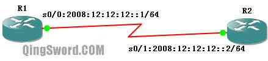
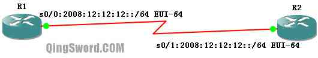
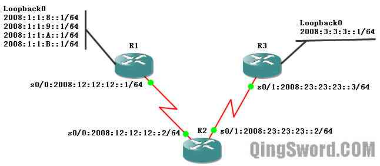
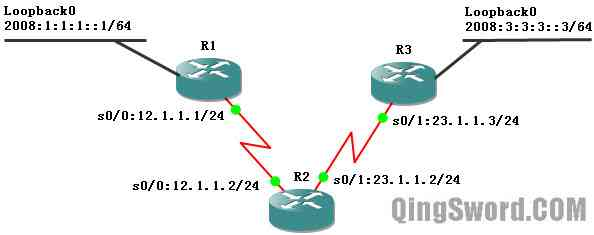

[CCNA图文笔记]-32-IPv6实例详解
引言
这篇文章简单的介绍一下IPv6技术，涉及IPv6的表示格式（格式和IPv4有很大不同）、在Cisco路由接口上配置IPv6地址（普通静态配置和静态EUI-64配置）、IPv6静态和动态路由配置，最后会介绍一个IPv4到IPv6过渡阶段的技术（IPv6-Over-IPv4隧道）。
文章目录
- 0×1.IPv6概述
- a.IPv6地址格式
- b.IPv6地址类型
- 0×2.Cisco路由器配置IPv6地址
- a.手工静态配置
- b.静态EUI-64配置
- 0×3.IPv6路由配置实例
- a.如何配置IPv6静态路由
- b.如何配置IPv6 RIPng
- 0×3.配置IPv6-Over-IPv4隧道实例
0×1.IPv6概述
a.IPv6地址格式
IPv6地址一共有128位长度（IPv4一共是32位长度），每16位为一个分组，每个16位分组写成4个十六进制数，一共分为8组，中间用冒号分隔，下面举个例子：
2001:3CA1:010F:001A:121B:0000:0000:0010
上面这个就是一个完整的IPv6地址格式，一共用冒号分为8组，每组4个十六进制数，每个十六进制数占4位，那么4个十六进制数字就是4X4=16位，即每组是16位，8组就是128位。
从上面这个例子看起来IPv6地址非常冗长，不过IPv6有下面几种简写形式：
1）IPv6地址中每个16位分组中前导零位可以去除做简化表示，但每个分组必须保留一位数字，请看下面的例子；
/*完整版的IPv6地址*/ 2001:3CA1:010F:001A:121B:0000:0000:0010 /* * 简写去除前导0简写形式，可以看到第三个和第四个分组去除了前导0， * 第七个和第八个分组因为全部是0，但必须保留一位数字， * 所以保留一个0，但这还不是最简写形式。 */ 2001:3CA1:10F:1A:121B:0:0:10
2）可以将冒号十六进制格式中相邻的连续零位合并，用双冒号表示"::"，并且双冒号在地址格式中只能出现一次，请看下面的例子。
/*完整版的IPv6地址*/ 2001:3CA1:010F:001A:121B:0000:0000:0010 /*去除前导零并将连续的零位合并。*/ 2001:3CA1:10F:1A:121B::10 /*另一个完整的IPv6地址*/ 2001:0000:0000:001A:0000:0000:0000:0010 /* * 可以看到虽然第二组和第三组也是连续的零位， * 但双冒号只能在IPv6的简写中出现一次，运用到了后面更长的连续零位上。 * 这个地址还可以简写成这样2001::1A:0:0:0:10。 */ 2001:0:0:1A::10 /* * 需要将上面这个地址还原也很简单，只要看存在数字的分组有几个， * 然后就能推测出双冒号代表了多少个连续的零位分组。 * 一共有5个保留了数字的分组，那么连续冒号就代表了3个连续的零位分组。 */ /* * 需要注意的是，只有前导零位可以去除，如果这个地址写成下面这样就是错误的， * 注意最后一组，不能去除1后面的那个0。 */ 2001:0:0:1A::1 /*这是错误的写法*/
b.IPv6地址类型
IPv6中的地址有单播地址（Unicast）、组播地址（Multicast）、任意播地址（Anycast）除此之外还包含一些特殊的地址，下面是几个主要的地址介绍。
1）全局单播地址
全局单播地址是全球可路由的，可以分配给任何个人和机构，IANA组织当前规定全局单播地址是2000::/3，然后IANA再将这个地址空间逐级分下去，/23是注册机构前缀，/32是ISP运营商前缀，/48是站点前缀，/64是子网前缀。
注意，IPv6中没有广播地址。
2）组播地址
IPv6组播地址的格式是FF00::/8，其作用与IPv4中的组播地址相同。
3）私有地址
IPv6中的私有地址和IPv4的私有地址意义相同，都是用作本地使用，只具有本地意义，IPv6中有两种私有地址：
链路本地地址（Link-local addresses）——当两个支持IPv6特性的路由器直连时，直连的接口会自动给自己分配一个链路本地地址，其主要作用是在没有管理员配置时设备就能互相通信。链路本地地址中的前10bit是FE80（转换成二进制就是1111 1110 10，一共十位），后54bit全0，最后64bit是EUI-64地址（稍后会介绍到），也就是说链路本地地址的前缀是FE80::/64。
站点本地地址（Site-local addresses）——站点本地地址现在已经被废除。出于历史原因，这里还是简单的介绍一下，站点本地地址的前10bit是FEC0,后54位是0，最后64位是EUI-64地址，因为IPv6地址空间很大，所以这种类型的私有地址没有了存在的必要。
4）回环地址
IPv6中只有一个回环地址"0:0:0:0:0:0:0:1"，简写成"::1"，IPv6的回环地址功能和IPv4的127.0.0.0/8网段的回环地址功能是一样的。
5）不确定地址
IPv4中的不确定地址是用"0.0.0.0"表示，在IPv6中不确定地址使用"0:0:0:0:0:0:0:0"表示，简写成"::"。
0×2.Cisco路由器配置IPv6地址
a.手工静态配置
在GNS3中用一个小实例来简单演示一下的IPv6手工静态配置（必须在模拟器中给每个路由器添加至少一个快速以太网模块，否则两端会无法ping通，稍后介绍为什么），请看下图，R1-2是c3640路由，连线与IPv6地址配置如图所示：
R1配置：
R1(config)#int s 0/0 /* * 后面的/64代表子网掩码位，这是简写形式，这个地址的完整形式应该是: * "2008:0012:0012:0012:0000:0000:0000:0001/64" */ R1(config-if)#ipv6 address 2008:12:12:12::1/64 R1(config-if)#no shut R1(config-if)#end
R2配置：
R2(config)#int s 0/1 R2(config-if)#ipv6 address 2008:12:12:12::2/64 R2(config-if)#no shut R2(config-if)#end /*Ping测试，Ping一下R1*/ R2#ping 2008:12:12:12::1 !!!!! /*成功Ping通*/ /*查看IPv6路由表*/ R2#show ipv6 route IPv6 Routing Table - 4 entries Codes: C - Connected, L - Local, S - Static, R - RIP, B - BGP U - Per-user Static route .... C 2008:12:12:12::/64 [0/0] via ::, Serial0/1 L 2008:12:12:12::2/128 [0/0] via ::, Serial0/1 L FE80::/10 [0/0] via ::, Null0 L FF00::/8 [0/0] via ::, Null0
b.静态EUI-64配置
首先还是通过一个实例来配置一下EUI-64，然后再介绍EUI-64是怎么得来的。
注意：在GNS3中配置EUI-64的时候，必须给两个路由添加上至少一个快速以太网接口。这是GNS3的缺陷，因为真实路由器默认都是存在以太网接口的，而GNS3中的设备默认是没有模块的，而EUI-64地址需要使用以太网接口的MAC地址。
R1配置：
R1(config)#int s 0/0 /* * 静态EUI-64的配置方法，前64位手工指定， * 后64位地址使用eui-64地址来代替。 */ R1(config-if)#ipv6 add 2008:12:12:12::/64 eui-64 R1(config-if)#no shut R1(config-if)#end
R2配置：
R2(config)#int s 0/1 R2(config-if)#ipv6 add 2008:12:12:12::/64 eui-64 R2(config-if)#no shut R2(config-if)#end
配置完成后，查看一下R2的S0/1接口到底被分配了一个什么样的地址：
R2#show ipv6 interface s 0/1 Serial0/1 is up, line protocol is up /*这个接口的链路本地地址*/ IPv6 is enabled, link-local address is FE80::CE01:6FF:FE04:10 /*这个地方显示的就是我们配置的静态EUI-64地址*/ Global unicast address(es): 2008:12:12:12:CE01:6FF:FE04:10, subnet is 2008:12:12:12::/64 [EUI]
从上面的输出中可以看到R2的S0/1接口的IPv6地址是：
2008:12:12:12:CE01:6FF:FE04:10/64
这个地址的前64位是我们手动指定的（2008:12:12:12），后面64位（CE01:6FF:FE04:10）是按照下面的方法得到的：
假设给路由器的fa1/0配置静态EUI-64地址，fa1/0接口的MAC地址是（CE0106040010），前64位我们指定了（2008:12:12:12），后面的64位会使用这个接口的MAC地址最中间插入FFFE得出（CE0106 FFFE 040010），用冒号按4位十六进制一组分隔就是（CE01:06FF:FE04:0010），写成简写形式就是（CE01:6FF:FE04:10）,这就是上面的IPv6地址的由来。
但是细心的朋友可能发现了，我们配置的R1和R2之间的连线是串行线路s0/0-s0/1，串行接口是没有MAC地址的，实际上，串行接口上配置IPv6地址时，串行接口会使用路由器上接口号最小的那个以太网接口的MAC地址来计算EUI-64地址（这就是为什么要在GNS3中给R1和R2分别添加一个fa1/0接口的原因，经过测试，GNS3中如果不添加这个以太网接口，两边的路由会出现"链路本地地址"冲突的情况。也就是说，在GNS3中路由器没有添加以太网接口时，默认情况下会两边使用相同的MAC地址计算EUI-64地址，这种情况在真实环境是不会发生的）
0×3.IPv6路由配置实例
a.如何配置IPv6静态路由
使用GNS3配置下面的拓扑，R1、R2、R3上面都必须添加一个以太网接口，这是GNS3的缺陷，上面"静态EUI-64配置"中已经解释过：
上图中，R1开启了一个回环接口，这个回环接口下配置了4个IPv6地址，和IPv4不同的是，IPv6在一个接口下配置多个IP地址的时候不需要添加Secondary参数；R3也开启了一个回环接口；在R1和R3上使用默认路由指向R2，在R2上使用路由汇聚，将去往R1回环接口的4个IPv6地址汇聚成一条静态路由，R2上另外一条静态路由去往R3的回环接口。请看下面的配置：
R1配置：
/*到目前为止c3640路由默认不支持IPv6路由，需要用下面的命令开启*/ R1(config)#ipv6 unicast-routing /*配置与R2相连的串口IPv6地址*/ R1(config)#int s 0/0 R1(config-if)#ipv6 add 2008:12:12:12::1/64 R1(config-if)#no shut /*在R1的lo0接口上配置了4个IPv6地址*/ R1(config)#int lo 0 R1(config-if)#ipv6 add 2008:1:1:8::1/64 R1(config-if)#ipv6 add 2008:1:1:9::1/64 R1(config-if)#ipv6 add 2008:1:1:A::1/64 R1(config-if)#ipv6 add 2008:1:1:B::1/64 R1(config-if)#no shut R1(config-if)#exit /* * 使用默认路由指向R2， * 其中的"::/0"等同于"0:0:0:0:0:0:0:0/0"。 */ R1(config)#ipv6 route ::/0 2008:12:12:12::2 R1(config)#end
R2配置：
R2(config)#ipv6 unicast-routing R2(config)#int s 0/0 R2(config-if)#ipv6 add 2008:12:12:12::2/64 R2(config-if)#no shut R2(config-if)#int s 0/1 R2(config-if)#ipv6 add 2008:23:23:23::2/64 R2(config-if)#no shut R2(config-if)#exit /*指向R3回环接口的静态路由*/ R2(config)#ipv6 route 2008:3:3:3::/64 2008:23:23:23::3 /* * 指向R1回环接口的汇聚静态路由，路由的汇聚和IPv4是一样的， * R1的回环接口上面的4个IPv6地址中的8、9、A、B都是十六进制数， * 将他们转换成二进制就是: * 8=10 00 * 9=10 01 * A=10 10 * B=10 11 * 二进制中前面两位是相同的，所以前缀长度64减去后面两位不同的，就是62了。 */ R2(config)#ipv6 route 2008:1:1:8::/62 2008:12:12:12::1 R2(config)#end
R3配置：
R3(config)#ipv6 unicast-routing R3(config)#int s 0/1 R3(config-if)#ipv6 add 2008:23:23:23::3/64 R3(config-if)#no shut R3(config-if)#int lo 0 R3(config-if)#ipv6 add 2008:3:3:3::1/64 R3(config-if)#no shut R3(config-if)#exit /*使用默认静态路由指向R2*/ R3(config)#ipv6 route ::/0 2008:23:23:23::2 R3(config)#end /*测试Ping R1回环接口任意一个IP都可以通*/ R3#ping 2008:1:1:A::1 !!!!!
配置完成后全网测试都能Ping通。不要关闭这个实验，我们在这个实验的基础上继续配置下面的RIPng动态路由。
b.如何配置IPv6 RIPng
RIPng（Routing Information Protocol Next Generation，RIP下一代版本），是针对IPv6的RIP版本，和RIPv2非常相似，是一个距离矢量的路由协议，最大跳数是15，使用水平分隔和毒性反转来阻止路由环路。RIPng使用多播地址"FF02::9"作为目的更新地址，发送更新使用UDP协议的521端口。
在上面（图3）实例的基础上，删除R1、R2、R3上面配置的静态路由，然后配置RIPng。
R1配置：
/*删除上一个实例中配置的默认路由*/ R1(config)#no ipv6 route ::/0 /*启用RIPng协议，后面的test1是自定义的名称，只具有本地意义*/ R1(config)#ipv6 router rip test1 R1(config-rtr)#exit R1(config)#int lo 0 /*和IPv4的RIP不同，RIPng是直接在接口下开启RIPng*/ R1(config-if)#ipv6 rip test1 enable R1(config-if)#int s 0/0 R1(config-if)#ipv6 rip test1 enable R1(config-if)#end
R2配置：
R2(config)#no ipv6 route 2008:1:1:8::/62 R2(config)#no ipv6 route 2008:3:3:3::/64 R2(config)#ipv6 router rip test2 R2(config-rtr)#int s 0/0 R2(config-if)#ipv6 rip test2 enable R2(config-if)#int s 0/1 R2(config-if)#ipv6 rip test2 enable R2(config-if)#end
R3配置：
R3(config)#no ipv6 route ::/0 R3(config)#ipv6 router rip test3 R3(config-rtr)#int s 0/1 R3(config-if)#ipv6 rip test3 enable R3(config-if)#int lo 0 R3(config-if)#ipv6 rip test3 enable R3(config-if)#end
网络收敛后，在R3上查看IPv6路由表：
R3#show ipv6 route IPv6 Routing Table - 12 entries Codes: C - Connected, L - Local, S - Static, R - RIP, B - BGP U - Per-user Static route /*这四条R开头的是R1的回环接口路由条目*/ R 2008:1:1:8::/64 [120/3] via FE80::CE01:DFF:FE4C:10, Serial0/1 R 2008:1:1:9::/64 [120/3] via FE80::CE01:DFF:FE4C:10, Serial0/1 R 2008:1:1:A::/64 [120/3] via FE80::CE01:DFF:FE4C:10, Serial0/1 R 2008:1:1:B::/64 [120/3] via FE80::CE01:DFF:FE4C:10, Serial0/1 C 2008:3:3:3::/64 [0/0] via ::, Loopback0 L 2008:3:3:3::1/128 [0/0] via ::, Loopback0 /*这里是R1和R2相连的那个网段的路由条目*/ R 2008:12:12:12::/64 [120/2] via FE80::CE01:DFF:FE4C:10, Serial0/1 C 2008:23:23:23::/64 [0/0] via ::, Serial0/1 L 2008:23:23:23::3/128 [0/0] via ::, Serial0/1 L FE80::/10 [0/0] via ::, Null0 L FF00::/8 [0/0] via ::, Null0 /* * RIPng的条目和RIP有很大不同，其中跳数比IPv4下运行RIP多1， * 在默认情况下，进入路由表之前RIPng度量值就已经加了1。 * * 另外，via地址不是邻居的接口IPv6地址， * 而是邻居接口的本地链路地址，本地链路地址上文已经介绍过， * 是使用FE80::/64前缀加上EUI-64地址得到的。 */
0×4.配置IPv6-Over-IPv4隧道实例
下图中，R1和R3上开启了回环接口来模拟IPv6网络，R1-R2-R3相连的串行接口运行的是IPv4网络，各设备IP地址如图所示：
Ps：同上面几个实例一样，一定不要忘记在GNS3中给各个路由添加一个以太网接口，虽然这里并没有使用这个以太网接口，但是链路本地地址的EUI-64部分需要这个以太网接口的MAC地址。
对于这样的拓扑结构，两端运行的是IPv6网络，中间是IPv4网络，可以使用一种叫做Tunneling（隧道）的技术，来实现两端的IPv6网络能够跨越IPv4网络进行通信：
R1配置：
/*开启IPv6路由支持*/ R1(config)#ipv6 unicast-routing R1(config)#int lo 0 R1(config-if)#ipv6 add 2008:1:1:1::1/64 R1(config-if)#no shut R1(config-if)#int s 0/0 R1(config-if)#ip add 12.1.1.1 255.255.255.0 R1(config-if)#no shut R1(config-if)#exit /*配置去往R2的IPv4默认路由*/ R1(config)#ip route 0.0.0.0 0.0.0.0 12.1.1.2 /*创建一个隧道接口，0是隧道号*/ R1(config)#int tunnel 0 /*隧道的源IP地址是R1的s0/0*/ R1(config-if)#tunnel source 12.1.1.1 /* * 隧道的目的IP地址是R3的s0/1,为了保证隧道两端能够正常通信, * 隧道的源和目的必须是路由可达的（IPv4的路由可达）。 */ R1(config-if)#tunnel destination 23.1.1.3 /* * 配置隧道模式,ipv6ip就是IPv6-Over-IPv4模式， * 也就是将IPv6的包封装在IPv4的包中。 */ R1(config-if)#tunnel mode ipv6ip /*给隧道接口配置一个IPv6地址*/ R1(config-if)#ipv6 add 2008:13:13:13::1/64 R1(config-if)#exit /*配置IPv6默认路由，指向R3上的隧道接口地址*/ R1(config)#ipv6 route ::/0 2008:13:13:13::3 R1(config)#end
R2配置：
R2(config)#int s 0/0 R2(config-if)#ip add 12.1.1.2 255.255.255.0 R2(config-if)#no shut R2(config-if)#int s 0/1 R2(config-if)#ip add 23.1.1.2 255.255.255.0 R2(config-if)#no shut R2(config-if)#end
R3配置：
R3(config)#ipv6 unicast-routing R3(config)#int s 0/1 R3(config-if)#ip add 23.1.1.3 255.255.255.0 R3(config-if)#no shut R3(config-if)#int lo 0 R3(config-if)#ipv6 add 2008:3:3:3::3/64 R3(config-if)#no shut R3(config-if)#exit R3(config)#ip route 0.0.0.0 0.0.0.0 23.1.1.2 R3(config)#int tunnel 0 R3(config-if)#tunnel source 23.1.1.3 R3(config-if)#tunnel destination 12.1.1.1 R3(config-if)#tunnel mode ipv6ip R3(config-if)#ipv6 add 2008:13:13:13::3/64 R3(config-if)#exit /*配置IPv6默认路由，指向R1上的隧道接口地址*/ R3(config)#ipv6 route ::/0 2008:13:13:13::1 R3(config)#end
配置完成后在R3上面Ping测试：
/*Ping R1的隧道地址，成功*/ R3#ping 2008:13:13:13::1 !!!!! /*Ping R1的回环接口地址，成功*/ R3#ping 2008:1:1:1::1 !!!!! /*Ping R1的串口地址，成功*/ R3#ping 12.1.1.1 !!!!!
IPv6-Over-IPv4隧道实验完成，两端的IPv6网络可以穿越IPv4网络进行通信，总结一下，在IPv6-Over-IPv4隧道中，首先必须保证IPv4的路由可达，在此基础上，在IPv6边界路由上配置Tunnel，源为本地边界路由的出口IPv4地址，目的为目标IPv6边界路由的接收口IPv4地址，这两个IPv4地址必须IPv4路由可达，在此基础上再配置隧道IPv6地址，只要两端配置的IPv6地址在同一个网段中，就好像两个IPv6边界路由之间是使用一条专线直连一样，再使用IPv6的静态路由或开启路由协议即可。
这篇文章所讲解的IPv6知识只是IPv6技术的冰山一角，希望可以起到一个抛砖引玉的作用。